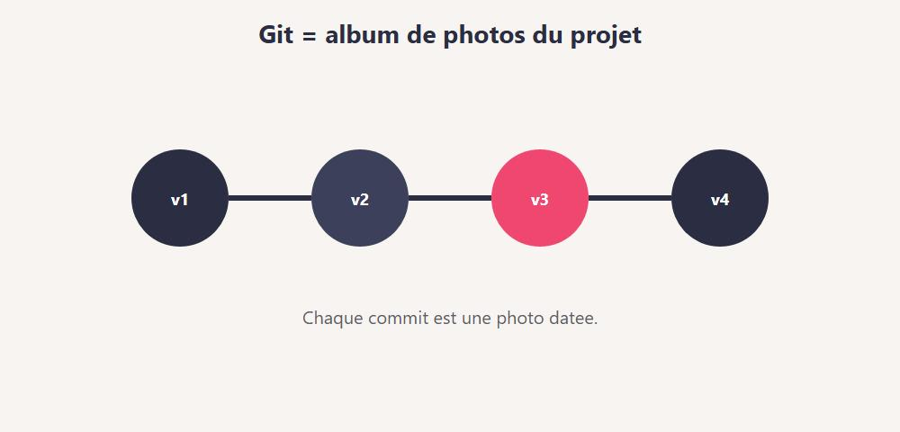
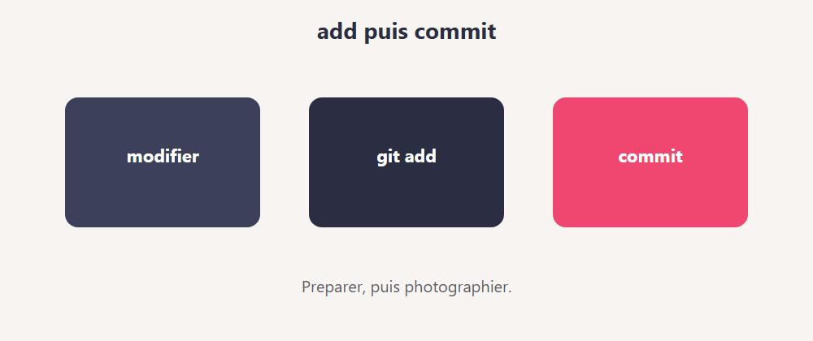
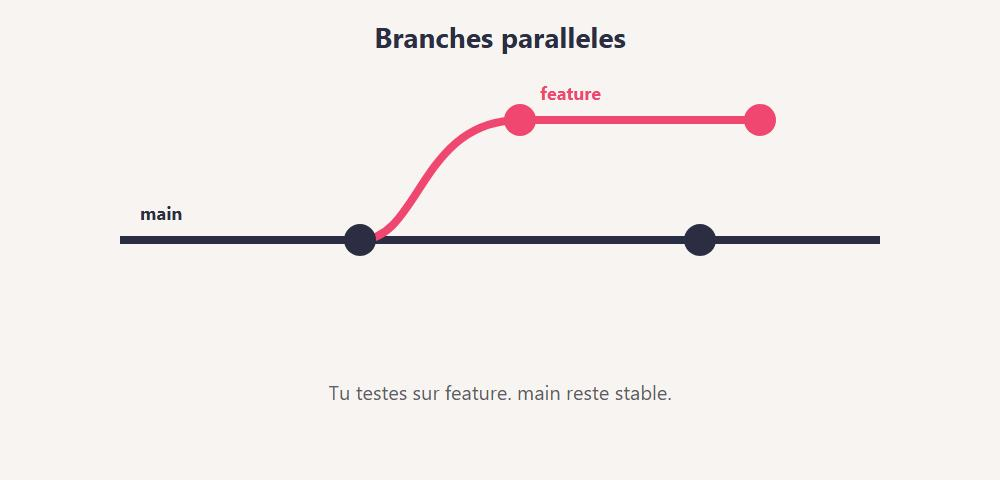
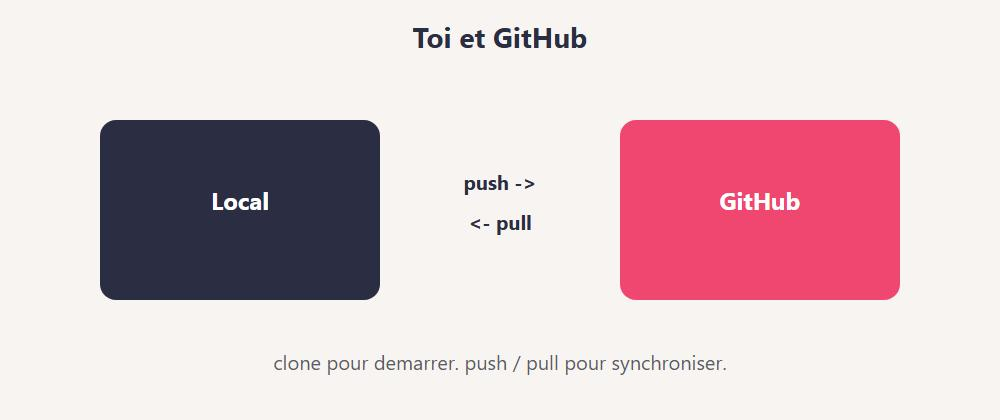
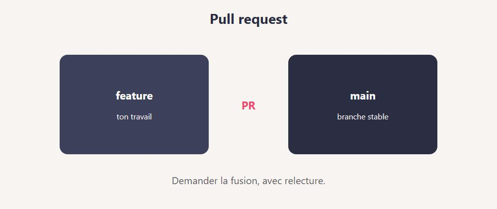

Chapitre 1
Chapitre 1 - Salut, c'est quoi Git ?

Git garde l'historique de ton projet, version apres version.
Git, c'est un outil pour garder l'historique de ton projet.
Chaque "photo" s'appelle un commit.
Tu modifies des fichiers.
Tu dis a Git : "garde cette version".
Plus tard, tu peux revenir en arriere. Ou comparer. Ou travailler a plusieurs.
A quoi ca sert ?
- Ne plus perdre ton travail
- Voir qui a change quoi (et quand)
- Essayer une idee sur une branche sans casser le reste
- Collaborer (avec GitHub, GitLab, etc.)
Git vs GitHub
- Git : le logiciel sur ton ordi
- GitHub : un site qui heberge des depots Git en ligne
Tu peux utiliser Git tout seul, sans GitHub.
GitHub devient utile pour partager, sauvegarder au loin, et faire des pull requests.
Image mentale
Ton projet = un album photo.
Chaque commit = une photo datee + un petit titre.
Les branches = des albums paralleles.
Ce que tu vas savoir faire
- Installer Git et configurer ton nom / email
- Creer un depot (
git init)
add / commit / status / log- Branches, fusion, conflits
.gitignore- Cloner, pousser, tirer depuis GitHub
- Stash, annulations simples
- Lire / ouvrir une pull request
- 1. Lis
- 2. Tape les commandes dans un vrai dossier de test
- 3. Regarde ce que Git repond
- 4. Casse volontairement, puis repare
Git s'apprend avec les mains.
Pas seulement avec les yeux.
Mythe a casser
"Git, c'est trop complique pour un debutant."
Non.
Les 5 commandes du quotidien suffisent deja a etre utile.
Le reste vient apres.
Allez. On installe.
En vrai, sur le terrain
Dis a voix haute : "Je veux une machine a photos de mon code."
C'est Git.
Mini defi
Ecris 3 peurs / doutes sur Git (ex : "j'ai peur d'effacer").
On y repondra dans le livre.
Chapitre 2
Chapitre 2 - Installer Git
Windows
- 1. Va sur git-scm.com
- 2. Telecharge l'installateur
- 3. Suis l'assistant (les options par defaut vont bien au debut)
- 4. Ouvre un terminal et tape :
Si tu vois un numero, c'est bon.
Premiere config (obligatoire)
Git a besoin de savoir qui tu es pour signer tes commits :
git config --global user.name "Ton Prenom"
git config --global user.email "ton@email.com"
Verifie :
git config --global --list
Utilise un email que tu assumeras (souvent celui de ton compte GitHub).
Ou taper les commandes ?
- Terminal Windows (PowerShell)
- Git Bash (installe avec Git)
- Terminal integre de VS Code
Les commandes de ce livre marchent dans ces environnements.
Sur PowerShell, c'est le meme git ....
Editeur de message
Parfois Git ouvre un editeur pour ecrire un message de commit.
Au debut, reste sur les messages en une ligne avec -m "..." .
Plus simple.
Aide integree
Ou :
A toi
- 1.
git --version
- 2. Configure
user.name et user.email
- 3. Affiche la config
Erreur classique
Tu commits sans avoir configure le nom/email.
Git rale. Ou pire : il utilise une fausse identite.
Configure tout de suite.
En vrai, sur le terrain
Ouvre VS Code. Ouvre le terminal. Tape git --version.
Si ca marche la, tu es pret pour la suite.
Mini defi
Cree un dossier mes-tests-git sur ton disque.
C'est ton terrain de jeu pour tout le livre.
Chapitre 3
Chapitre 3 - Ton premier depot
Un depot (repository) = un projet suivi par Git.
Creer le dossier
mkdir mon-carnet
cd mon-carnet
Initialiser Git
Git cree un dossier cache .git.
Ne le touche pas a la main. C'est la memoire de Git.
Premier fichier
Cree readme.txt avec :
Voir l'etat
Git dit souvent :
- fichiers non suivis (untracked)
- ou modifies
- ou prets a commit
Lis status souvent. C'est ton tableau de bord.
Zones a retenir
- 1. Dossier de travail : tes fichiers normaux
- 2. Index / staging : ce que tu prepares pour la photo
- 3. Depot : l'historique des commits
On detaille add / commit au chapitre suivant.
git init dans un projet existant
Tu peux lancer git init dans un dossier qui a deja des fichiers.
Puis tu choisis quoi ajouter.
A toi
- 1.
git init dans mes-tests-git (ou mon-carnet)
- 2. Cree un fichier texte
- 3. Lance
git status et lis le resultat a voix haute
Erreur classique
Tu fais git init dans le mauvais dossier (ex : ton dossier utilisateur entier).
Verifie avec cd et pwd (ou cd sous PowerShell) avant.
En vrai, sur le terrain
Ouvre l'explorateur. Active "elements caches".
Tu dois voir .git apparaitre apres init.
Mini defi
Ajoute un second fichier notes.txt.
Relance status. Compare avec avant.
Trois zones, encore une fois
Imagine une chaine :
- 1. Tu ecris dans tes fichiers (zone de travail)
- 2. Tu choisis quoi photographier (
add = index)
- 3. Tu valides la photo (
commit = historique)
Beaucoup de debutants confondent 2 et 3.
Si status dit "Changes to be committed", c'est pret pour la photo.
Si ca dit "Changes not staged", il manque un add.
Chapitre 4
Chapitre 4 - add et commit (la photo)

add prepare. commit photo. Une etape claire.
Le duo du quotidien :
- 1.
git add : je prepare
- 2.
git commit : je prends la photo
Ajouter un fichier
git add readme.txt
git status
Le fichier passe en "staged" (index).
Pret pour le commit.
Ajouter plusieurs fichiers
Le point = "tout ce qui a change ici".
Pratique. Mais regarde status avant : tu ne veux pas ajouter un secret par accident.
Commit
git commit -m "Premier commit : readme de base"
-m = message en une ligne.
Le message doit dire pourquoi / quoi de utile. Pas juste "update".
Voir que ca a marche
git status
git log --oneline
status devrait dire que rien ne reste a commit.
log montre ta photo.
Modifier encore
Change readme.txt, puis :
git status
git add readme.txt
git commit -m "Clarifier le titre du carnet"
Chaque commit = une etape claire.
Schema mental
modifier fichiers
-> git add
-> git commit
-> historique +1
Amend (apercu, avec prudence)
Tu viens de commit et tu as oublie un fichier ?
git add fichier_oublie.txt
git commit --amend --no-edit
Ca refait le dernier commit.
Ne l'utilise pas sur un commit deja pousse si tu travailles en equipe (sauf si tu sais pourquoi).
A toi
Fais 2 commits :
- 1. creation du readme
- 2. ajout d'une ligne
En vrai, sur le terrain
Apres chaque commit, git log --oneline.
Tu dois voir tes messages s'empiler.
Mini defi
Cree todo.txt avec 3 taches.
Commit. Coche une tache. Commit encore.
Chapitre 5
Chapitre 5 - Lire l'historique
L'interet de Git, c'est de pouvoir regarder en arriere sans paniquer.
log simple
Tu vois hash, auteur, date, message.
Quitte avec q si c'est une vue longue.
log compact
Une ligne par commit. Ideal au debut.
Voir un fichier a travers le temps
git log --oneline -- readme.txt
diff : qu'est-ce qui a change ?
Avant de commit :
Ca montre les modifications non stagees.
Entre staging et dernier commit :
Entre deux commits :
HEAD = ou tu es maintenant.
HEAD~1 = le commit d'avant.
show
Detail du dernier commit.
Checkout d'un fichier (apercu)
Pour jeter les modifs non commit d'un fichier :
(Anciennement git checkout -- readme.txt.)
Attention : tu perds les changements non sauves dans un commit.
A toi
- 1. Fais un petit changement
- 2.
git diff
- 3.
add + commit
- 4.
git log --oneline
En vrai, sur le terrain
Ouvre git log --oneline --graph --all une fois.
Meme sur un petit projet, tu vois la forme de l'histoire.
Mini defi
Cree 3 commits avec des messages tres clairs.
Demande a quelqu'un de lire ton log --oneline : est-ce comprehensible ?
Chapitre 6
Chapitre 6 - Les branches

Une branche = une piste parallele pour tester sans casser.
Une branche = une piste parallele.
Tu experimentes sans casser la version stable.
Voir les branches
Souvent tu as main (ou master sur de vieux depots).
Creer et changer de branche
git branch idee-couleurs
git switch idee-couleurs
Ou en une commande :
git switch -c idee-couleurs
(git checkout -b ... existe encore. switch est plus clair.)
Travailler sur la branche
Modifie un fichier. Commit.
Ces commits sont sur idee-couleurs.
main n'a pas encore ces changements.
Revenir sur main
Tes fichiers "reviennent" a l'etat de main.
Magique la premiere fois. Normal ensuite.
A quoi ca sert vraiment ?
- Feature en cours
- Correction urgente sur
main pendant que tu experimentes ailleurs
- Essai risqué (tu peux jeter la branche)
Renommer / supprimer
git branch -m ancien-nom nouveau-nom
git branch -d idee-couleurs
-d refuse s'il reste des commits non fusionnes.
-D force (prudent).
A toi
- 1. Cree une branche
essai
- 2. Ajoute un fichier
essai.txt + commit
- 3. Reviens sur
main
- 4. Verifie que
essai.txt n'est plus la (normal)
En vrai, sur le terrain
Avant chaque experience : nouvelle branche.
Reflexe pro, meme en solo.
Mini defi
Deux branches : page-a et page-b.
Un commit different sur chacune. Note ce que log montre sur chaque.
Chapitre 7
Chapitre 7 - Fusionner (merge)
Tu as travaille sur une branche. Tu veux ramener le travail dans main.
Scenario
git switch main
git merge idee-couleurs
Git essaie de combiner les historiques.
Si tout va bien
Git cree souvent un "merge commit" (ou avance juste le pointeur : fast-forward).
Tu vois le resultat dans les fichiers + dans log.
Fast-forward, c'est quoi ?
Si main n'a pas bouge pendant ton travail, Git peut juste avancer.
Pas de conflit. Simple.
Merge avec message
Parfois Git ouvre un editeur.
Tu peux aussi :
git merge idee-couleurs -m "Fusion idee couleurs"
Apres le merge
git log --oneline --graph
git branch -d idee-couleurs
Tu peux supprimer la branche locale une fois fusionnee.
Quand ne pas merger directement ?
Sur GitHub, on passe souvent par une pull request (chapitre 16).
En local / solo, merge suffit pour apprendre.
A toi
- 1. Branche
ajout-note
- 2. Commit un fichier
- 3. Merge dans
main
- 4. Regarde
log --graph --oneline
En vrai, sur le terrain
Fais un dessin : main et feature qui se rejoignent.
Le merge, c'est le point de jonction.
Mini defi
Deux branches avec chacune un fichier different.
Merge les deux dans main. Les deux fichiers doivent etre presents.
Merge vs rebase (apercu)
merge : garde l'historique tel quel, ajoute souvent un commit de jonction.
rebase : rejoue tes commits "par-dessus" une autre branche. Historique plus lineaire, mais plus piegeux.
Pour ce livre : maitrise merge d'abord.
Le rebase, tu le croiseras plus tard (avec prudence, surtout sur branches partagees).
Chapitre 8
Chapitre 8 - Les conflits
Un conflit = Git ne sait pas choisir.
Deux versions du meme endroit. Il te demande d'arbitrer.
- 1. Sur
main, tu modifies la ligne 1 de readme.txt
- 2. Sur une branche, tu modifies aussi la ligne 1
- 3. Tu merges : boum, conflit
A quoi ca ressemble
Dans le fichier :
<<<<<<< HEAD
version de main
=======
version de la branche
>>>>>>> idee-couleurs
Tu gardes ce que tu veux. Tu enleves les marqueurs <<<<<<< etc.
Resolving
- 1. Ouvre le fichier
- 2. Corrige a la main
- 3.
git add fichier_corrige.txt
- 4.
git commit (pour conclure le merge)
Ou, si ton outil propose "accepter actuel / entrant / les deux", OK - mais comprends ce que tu acceptes.
Annuler un merge en cours
Si tu es perdu :
Retour avant le merge. Ouf.
Eviter les conflits (un peu)
- Petits commits
- Se parler en equipe
- Merger / rebaser souvent (pas attendre 3 semaines)
- Eviter que deux personnes editent la meme zone sans coordination
A toi
Provoque un conflit volontairement sur readme.txt.
Resols-le. Termine le merge.
En vrai, sur le terrain
Un conflit n'est pas un echec.
C'est Git qui dit : "decide humain".
Mini defi
Note 3 regles perso pour limiter les conflits dans ton prochain projet.
Chapitre 9
Chapitre 9 - .gitignore
Certains fichiers ne doivent jamais aller dans Git.
Secrets, caches, gros binaires, dossiers de dependances...
Creer le fichier
A la racine du projet, cree .gitignore :
# secrets
.env
*.key
# python
__pycache__/
.venv/
# node
node_modules/
# OS / editeur
.DS_Store
Thumbs.db
.idea/
.vscode/
Adapte a ton projet. Ce n'est pas une liste magique universelle.
Verifier
Les fichiers ignores ne doivent plus apparaitre comme "a ajouter".
Deja suivi par erreur ?
Si tu as deja add un fichier sensible :
git rm --cached fichier.env
Ca l'enleve de l'index, pas de ton disque.
Puis commit. Et ajoute-le au .gitignore.
Si le secret est deja sur GitHub : change le secret (mot de passe, cle).
L'enlever de l'historique est un autre niveau.
Templates
GitHub propose des .gitignore tout faits (Python, Node...).
Tu peux t'en inspirer.
A toi
Ajoute un .gitignore a ton carnet de tests.
Cree un faux .env avec SECRET=demo.
Verifie que Git l'ignore.
En vrai, sur le terrain
Avant le premier push public : relis git status.
Cherche mots de passe, cles, dumps, photos perso.
Mini defi
Ecris un .gitignore pour un mini site (HTML/CSS/JS) avec un dossier dist/ a ignorer.
Patterns utiles
*.log
tmp/
build/
dist/
*.pdf
!docs/manuel.pdf
! peut re-inclure une exception.
Commence simple. Complexifie seulement si besoin.
Chapitre 10
Chapitre 10 - GitHub, c'est quoi ?
GitHub heberge tes depots Git sur internet.
Sauvegarde distante + collaboration + issues + pull requests.
Compte
- 1. Cree un compte sur github.com
- 2. Confirme l'email
- 3. Optionnel mais recommande : active la double authentification
Nouveau depot en ligne
Sur GitHub : New repository
- Nom :
mon-carnet
- Public ou prive
- Tu peux ne pas cocher "Add a README" si tu as deja un depot local
Lier ton depot local
Sur la page du depot vide, GitHub montre des commandes.
En general :
git remote add origin https://github.com/TON_COMPTE/mon-carnet.git
git branch -M main
git push -u origin main
origin = surnom classique de ton remote principal.
Voir les remotes
SSH ou HTTPS ?
- HTTPS : simple au debut (parfois un token)
- SSH : cles, tres confortable au quotidien
Les deux marchent. Choisis-en un et avance.
README.md
Sur GitHub, README.md s'affiche en vitrine.
Ecris 5 lignes : but du projet + comment lancer.
A toi
- 1. Cree un depot GitHub de test (prive OK)
- 2. Branche
origin
- 3.
push ta branche main
En vrai, sur le terrain
Apres le push, rafraichis la page GitHub.
Tu dois voir tes fichiers. Soulagement.
Mini defi
Ajoute un vrai README.md clair. Commit. Push. Verifie le rendu.
Chapitre 11
Chapitre 11 - clone, push, pull

clone / pull / push : le dialogue avec GitHub.
Le dialogue avec le serveur.
clone
Recuperer un depot existant :
git clone https://github.com/TON_COMPTE/mon-carnet.git
cd mon-carnet
clone = copie + lien origin deja configure.
push
Envoyer tes commits locaux vers le remote :
La premiere fois (si pas de -u) :
pull
Recuperer les commits distants et les fusionner chez toi :
Reflexe avant de recommencer a coder le matin : git pull.
fetch (apercu)
fetch telecharge les infos sans fusionner tout de suite.
pull ≈ fetch + merge (en simplifiant).
Schema
toi (local) --push--> GitHub
toi (local) <--pull-- GitHub
Erreurs frequentes
rejected : le remote a des commits que tu n'as pas -> pull d'abord- auth ratee : mauvais token / session
- mauvaise branche : tu pushes
main alors que tu es ailleurs
A toi
- 1. Modifie un fichier
- 2. commit
- 3. push
- 4. Change quelque chose sur GitHub via l'interface (petit edit)
- 5.
git pull en local
En vrai, sur le terrain
Sur un projet a deux : toujours pull avant de pousser.
Ca diminue les conflits.
Mini defi
Clone un petit depot public open source (lecture seule).
Explore log --oneline. Ne push rien.
Chapitre 12
Chapitre 12 - De bons messages de commit
Un bon message sauve ton futur toi.
Et ton equipe.
Regle simple
- Premiere ligne : resume court (50-72 caracteres ideaux)
- Verbe a l'imperatif : "Ajouter", "Corriger", "Clarifier"
- Explique le pourquoi si ce n'est pas evident
Oui
Corriger le total TTC (oubli de la TVA)
Ajouter la page contact
Retirer le fichier .env du suivi
Non
update
fix
wip
asdf
final final 2
Corps optionnel
git commit -m "Corriger le calcul du panier" -m "Le total ignorait les codes promo. Desormais appliques avant TVA."
Conventional Commits (apercu)
Tu verras parfois :
feat: ajouter export PDF
fix: corriger lien casse du sommaire
docs: preciser l'install Windows
Utile en equipe. Pas obligatoire pour apprendre.
Une idee = un commit ?
Idealement : un commit = une intention.
Pas "j'ai change 40 fichiers sans rapport".
Pas non plus 40 micro-commits illegibles.
Le juste milieu vient avec l'experience.
A toi
Reecris ces messages pourris en bons messages :
- 1.
update
- 2.
fix stuff
- 3.
aaa
En vrai, sur le terrain
Lis ton git log --oneline.
Si tu ne comprends plus un message d'hier, renomme ta facon d'ecrire.
Mini defi
Fais 3 commits sur ton carnet avec des messages "pro".
Exemple de fil propre
Initialiser le projet
Ajouter la page d'accueil
Corriger le lien du menu mobile
Ignorer le fichier .env
Documenter l'installation dans le README
Tu peux lire ca dans 10 secondes et comprendre l'histoire.
C'est ca, le but.
Chapitre 13
Chapitre 13 - Mini-projet : carnet versionne
On enchaine le vrai workflow du quotidien.
But
Un petit projet carnet-git avec :
README.mdnotes.md- historique propre
- branche de feature
- push GitHub
Etapes
1. Local
mkdir carnet-git
cd carnet-git
git init
Ecris un README (but + auteur).
Commit : Initialiser le carnet
2. Notes
Ajoute notes.md avec 3 puces.
Commit : Ajouter les premieres notes
3. Branche
git switch -c feature/note-git
Ajoute une note sur Git.
Commit.
Reviens sur main et merge.
4. Ignore
Ajoute .gitignore avec .env et un faux secret local.
Commit.
5. GitHub
Cree le depot distant.
remote add + push -u origin main
6. Preuve
Copie l'URL GitHub dans ton README.md.
Commit + push.
Criteres de reussite
- Au moins 4 commits lisibles
- Une branche fusionnee
- Un
.gitignore
- Projet visible sur GitHub (prive OK)
Variante avancee
- Ouvre une issue "Ameliorer le README"
- Cree une branche depuis cette idee
- Ouvre une pull request (chapitre 16)
En vrai, sur le terrain
Chronometre-toi. Vise moins de 20 minutes une fois a l'aise.
Mini defi
Invite un ami en lecture seule sur le depot (s'il a un compte).
Chapitre 14
Chapitre 14 - Ce qu'il faut retenir (bases)
Boucle quotidienne
status -> add -> commit -> (push)
pull souvent si collab
Commandes vitales
git init / git clonegit statusgit add / git commitgit log --onelinegit switch / git branchgit mergegit pull / git pushgit remote -v
Zones
Travail -> index (add) -> historique (commit) -> remote (push)
Habitudes
- 1.
status avant et apres
- 2. Messages clairs
- 3.
.gitignore tot
- 4. Petites branches
- 5. Ne jamais commit un secret
Erreurs classiques
- Commit sur la mauvaise branche
- Push refuse car remote en avance
- Conflit laisse avec des
<<<<<<<
git add . sans regarder
Deux chapitres un cran au-dessus :
- stash + annuler proprement
- pull requests
Puis ateliers + quiz.
Mini check
Sans notes : ecris la boucle add/commit/push et a quoi sert une branche.
Aide-memoire express
| Besoin | Commande |
|---|
| Etat | git status |
| Preparer | git add |
| Photo | git commit -m "..." |
| Histoire | git log --oneline |
| Branche | git switch -c nom |
| Fusion | git merge nom |
| Envoyer | git push |
| Recevoir | git pull |
Imprime cette page mentalement.
Chapitre 15
Chapitre 15 - Stash et annuler (avec prudence)
Parfois tu dois changer de branche alors que tu as des modifs pas pretes.
stash
git stash
git switch autre-branche
# ...
git switch -
git stash pop
stash = met de cote.
stash pop = recupere (et enleve de la pile).
Voir la pile :
restore (annuler des modifs locales)
Revient a la derniere version commit (pour ce fichier).
Les changements non commits sont perdus.
restore --staged
git restore --staged fichier.txt
Retire du staging, garde les modifs dans le dossier.
reset --soft / --mixed (apercu)
Annule le dernier commit, garde les changements stages.
Annule le commit, garde les changements non stages.
reset --hard (danger)
Revient en arriere et jette les modifs.
Puissant. Dangereux. Pas sur un commit deja partage sans discussion.
revert (plus sur en equipe)
Cree un nouveau commit qui annule le precedent.
L'historique reste honest. Prefere ca sur main partage.
Regle d'or
- Local, pas pousse : reset possible
- Deja pousse / equipe : revert (ou discussion)
A toi
- 1. Modifie un fichier
- 2.
stash
- 3. Verifie
status propre
- 4.
stash pop
En vrai, sur le terrain
Avant un --hard, respire.
Copie le dossier ailleurs si tu as un doute.
Mini defi
Fais un commit "oops".
Annule-le avec revert. Regarde le log.
Chapitre 16
Chapitre 16 - Pull requests (PR)

Une pull request, c'est demander de fusionner ton travail.
Une pull request = "peux-tu fusionner mon travail dans la branche principale ?"
C'est le coeur de la collab sur GitHub.
Scenario type
- 1.
git switch -c feature/login
- 2. commits locaux
- 3.
git push -u origin feature/login
- 4. Sur GitHub : Compare & pull request
- 5. Remplis titre + description
- 6. Quelqu'un review
- 7. Merge sur GitHub
- 8. En local :
git switch main puis git pull
Pourquoi pas merger en silence ?
- Relecture
- Discussion
- CI / tests automatiques
- Historique clair
Meme en solo, une PR t'oblige a resumer ton travail. C'est sain.
Bonne description
## But
Ajouter un formulaire de contact.
## Changes
- page contact.html
- validation email basique
## Test
Ouvrir /contact et envoyer un faux message.
Draft PR
Tu peux ouvrir une PR en brouillon.
Utile pour montrer l'avancement sans demander le merge tout de suite.
Review
En review, on commente des lignes.
Tu pousses des commits sur la meme branche : la PR se met a jour.
- Create a merge commit
- Squash and merge (souvent propre pour petites features)
- Rebase and merge
Demande la convention de ton equipe.
A toi
- 1. Branche + 1 commit
- 2. Push
- 3. Ouvre une PR vers
main
- 4. Merge-la toi-meme
- 5.
git pull en local
En vrai, sur le terrain
Lis 2 PR open source.
Tu verras le meme format partout.
Mini defi
Ecris un modele de description PR dans ton README (section Contributing).
Chapitre 17
Chapitre 17 - Atelier : lire les messages Git
Git parle anglais souvent. On traduit.
"nothing to commit, working tree clean"
Rien a photographier. Tout est deja commit. OK.
"untracked files"
Fichiers pas encore suivis. add si tu les veux. Sinon .gitignore.
"Your branch is ahead of origin/main"
Tu as des commits locaux non pousses. git push.
"Your branch is behind"
Le remote a avance. git pull avant de continuer.
"rejected ... fetch first"
Push refuse. Tire d'abord. Resous. Repush.
"merge conflict"
Ouvre les fichiers marques. Nettoie. add. commit de merge.
"Permission denied" / auth
Probleme d'identifiants (HTTPS token, SSH key, droits du depot).
Methode
- 1. Lis la derniere partie du message
- 2. Ne panic pas sur le pavé rouge
- 3.
git status pour savoir ou tu es
- 4. Une action a la fois
Exercices
- 1. Provoque un push reject (pull manquant) et reparer
- 2. Provoque un conflit et le resoudre
- 3. Ajoute un secret au mauvais moment, retire-le avec
rm --cached
Check
Tu sais expliquer 4 messages courants sans google.
Traduction rapide
| Message (idee) | Action |
|---|
| working tree clean | Rien a commit |
| untracked | add ou ignore |
| ahead | push |
| behind | pull |
| rejected | pull puis push |
| conflict | editer + add + commit |
Garde ce tableau sous la main la premiere semaine.
Chapitre 18
Chapitre 18 - Atelier : workflow d'equipe (simule)
Meme seul, tu peux simuler deux personnes.
Idee
Deux dossiers locaux :
Tous deux clones du meme depot GitHub.
Tour de jeu
- 1. Alice cree une branche
feature/alice, commit, push, PR
- 2. Bob
pull sur main apres le merge
- 3. Bob cree
feature/bob sur une autre zone de fichier
- 4. PR de Bob
- 5. Alice review (meme si c'est toi sous un autre navigateur)
Regles d'equipe simples
- Pas de commit direct sur
main (branche + PR)
- Messages clairs
- PR petites
pull le matin- Ne jamais forcer (
push --force) sur main
force push ?
A bannir sur les branches partagees tant que tu ne maitrises pas.
Ca reecrit l'histoire distante. Ca peut effacer le travail des autres.
Protection de branche
Sur GitHub : Settings -> Branches -> proteger main.
Exige une PR. C'est une ceinture de securite.
A toi
Joue Alice et Bob sur un depot de test.
2 PR mergees. Historique lisible.
Mini defi
Ecris un fichier CONTRIBUTING.md de 10 lignes pour ton futur projet.
Mini charte (copie-colle)
- 1. Personne ne pousse en force sur
main
- 2. Toute feature passe par une PR
- 3. On review au moins 1 fois (meme soi-meme en solo)
- 4. On ne commit pas
.env
- 5. On ecrit des messages qui se lisent
Colle ca dans CONTRIBUTING.md.
Chapitre 19
Chapitre 19 - Atelier : reparer sans paniquer
Cas 1 - Mauvais fichier stage
git restore --staged mauvais.txt
Cas 2 - Mauvais message (pas encore push)
git commit --amend -m "Meilleur message"
Cas 3 - Commit en trop (pas push)
Cas 4 - Commit deja push (equipe)
Cas 5 - Mauvaise branche
Tu as commit sur main au lieu de feature :
git switch -c feature/oubli
git switch main
git reset --hard HEAD~1
git switch feature/oubli
Seulement si le commit n'est pas utile sur main et pas partage.
Sinon : demande conseil / fais une PR depuis ce commit autrement.
Cas 6 - Conflit qui te depasse
Repars. Demande de l'aide. Reessaye plus tard.
Checklist anti-stress
- 1.
git status
- 2.
git log --oneline -5
- 3. Est-ce deja pousse ?
- 4. Suis-je seul sur la branche ?
- 5. Alors seulement : restore / reset / revert
Exercice final atelier
Casse volontairement (mauvais add, mauvais message, petit conflit).
Repare avec la methode ci-dessus.
Ecris dans notes.md ce que tu as fait.
En vrai
Les seniors aussi cassent.
La difference : ils savent lire status et choisir un outil sur.
Quiz
Quiz final - Teste-toi !
Q1. Git sert surtout a :
- A) Dessiner des maquettes
- B) Garder l'historique des versions
- C) Remplacer un antivirus
Q2. GitHub, c'est :
- A) Un hebergeur de depots Git (+ collab)
- B) Un langage
- C) Un fichier
.gitignore
Q3. git init :
- A) Envoie sur internet
- B) Cree un depot local
- C) Supprime l'historique
Q4. Avant commit, on fait souvent :
- A)
git add
- B)
git push
- C)
git clone
Q5. git status sert a :
- A) Voir l'etat du dossier / index
- B) Fusionner
- C) Creer une PR
Q6. Une branche permet de :
- A) Compresser les images
- B) Travailler en parallele sans casser main
- C) Effacer GitHub
Q7. git merge :
- A) Clone un depot
- B) Fusionne des historiques / branches
- C) Ignore les fichiers
Q8. Un conflit veut dire :
- A) Git a plante pour toujours
- B) Deux versions du meme endroit a arbitrer
- C) Le disque est plein
Q9. .gitignore sert a :
- A) Decoruer le README
- B) Exclure des fichiers du suivi
- C) Accelerer internet
Q10. git push :
- A) Envoie tes commits vers le remote
- B) Telecharge seulement
- C) Cree une branche locale
Q11. git pull :
- A) Supprime origin
- B) Recupere (et integre) les commits distants
- C) Remplace
commit
Q12. Un bon message de commit :
- A)
update
- B)
Corriger le lien casse du menu
- C)
asdf
Q13. git stash :
- A) Met des modifs de cote temporairement
- B) Pousse sur GitHub
- C) Cree un remote
Q14. Sur un commit deja partage en equipe, prefere :
- A)
reset --hard silencieux
- B)
git revert
- C) Effacer le depot
Q15. Une pull request, c'est :
- A) Demander a fusionner une branche (souvent via review)
- B) Un virus
- C) Un type de conflit
Q16. git clone :
- A) Copie un depot distant en local
- B) Efface main
- C) Remplace status
Q17. git log --oneline :
- A) Affiche l'historique compact
- B) Installe Git
- C) Ouvre GitHub
Q18. Si push est rejected car remote en avance :
- A) Ignorer
- B)
git pull puis reparer eventuellement, puis push
- C) Formater le PC
Reponses
1 B, 2 A, 3 B, 4 A, 5 A, 6 B, 7 B, 8 B, 9 B, 10 A,
11 B, 12 B, 13 A, 14 B, 15 A, 16 A, 17 A, 18 B
Score
- 16-18 : nickel
- 12-15 : bien, relis conflits + undo + PR
- 8-11 : refais 4, 6, 8, 11, 14
- moins de 8 : refais le mini-projet tranquillement
Final
Bravo.
Bravo. Tu as les bases de Git et GitHub.
Tu as fini les bases de Git et GitHub.
Pas "je connais toutes les options cachees".
Mais "je sais versionner, brancher, fusionner, pousser, et me sortir d'un conflit". C'est le coeur du metier.
Ce que tu sais faire
- Installer / configurer Git
add / commit / log / status- Branches + merge + conflits
.gitignore- Remote, clone, push, pull
- Stash et annulations raisonnables
- Pull requests
Mission finale
Sur un vrai mini projet (meme un site de 2 pages) :
- 1. Depot GitHub
- 2. Branche feature
- 3. PR mergee
- 4. README clair
- 5. Aucun secret dans l'historique
La suite (quand tu voudras)
- Hooks / pre-commit
- Rebase interactif (avec prudence)
- Monorepos
- GitHub Actions (CI)
- Conventions d'equipe plus fines
Mais la, respire.
Encore bravo.
Ton code a maintenant une memoire. Et toi aussi.
Rituel des 2 minutes
Avant chaque session :
Apres chaque morceau utile :
git status
git add .
git commit -m "..."
git push
Regarde toujours status avant add ..
Les habitudes battent la memoire.